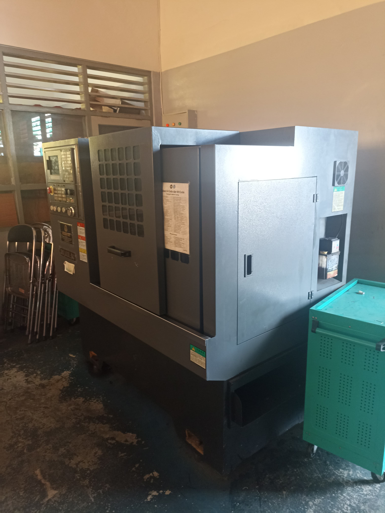
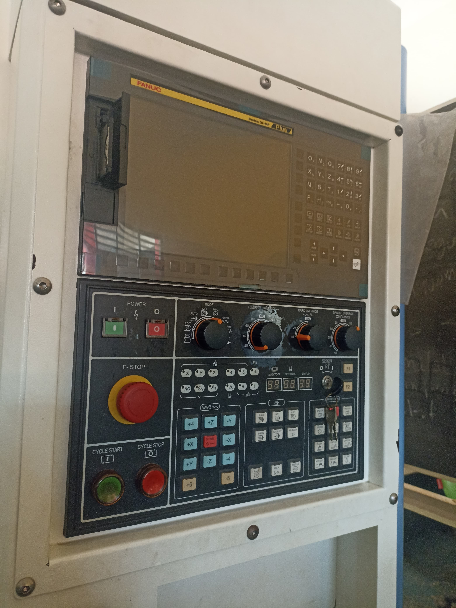
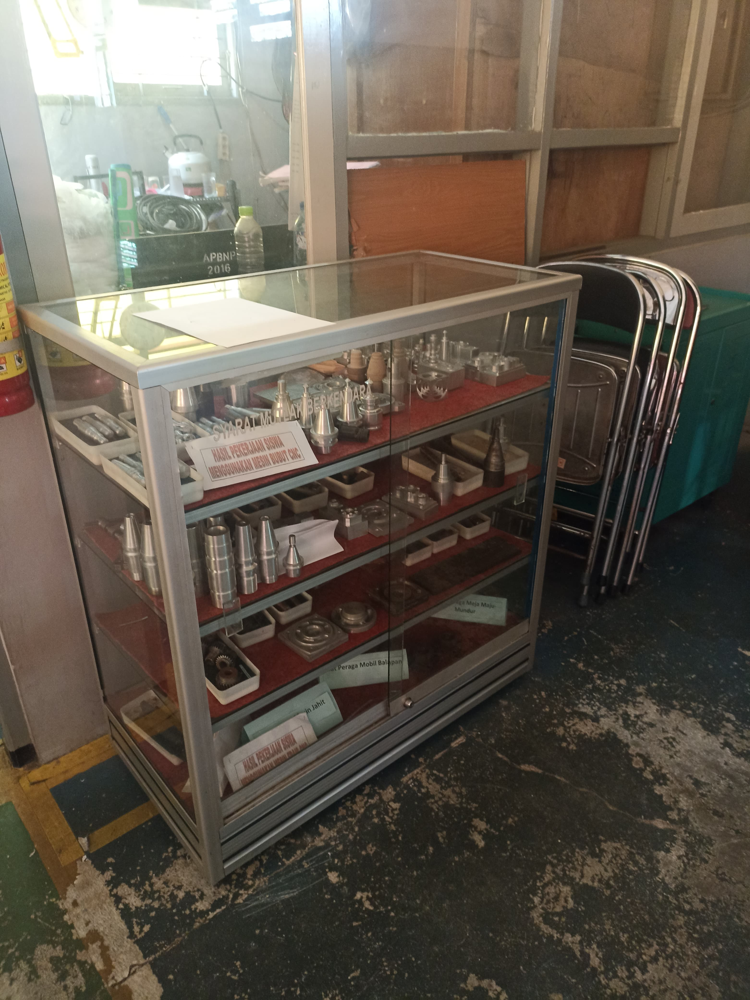
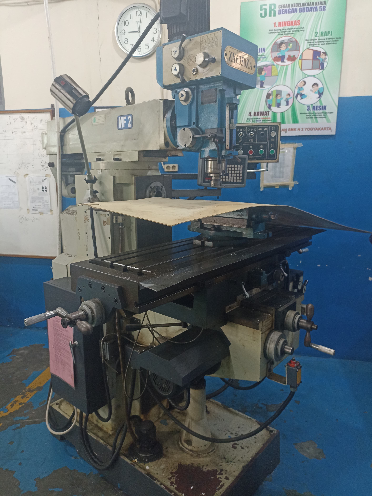

BERANDA
PROFIL
PRESTASI
ALBUM
BUKU TAMU
Beberapa Peralatan Yang Kami Miliki

Mesin CNC Milling
Vertical Machining Center (VMC)

Panel Control CNC

Hasil Mesin Bubut CNC

Mesin Milling
Kembali
Selanjutnya
🔴 Memuat berita terbaru...